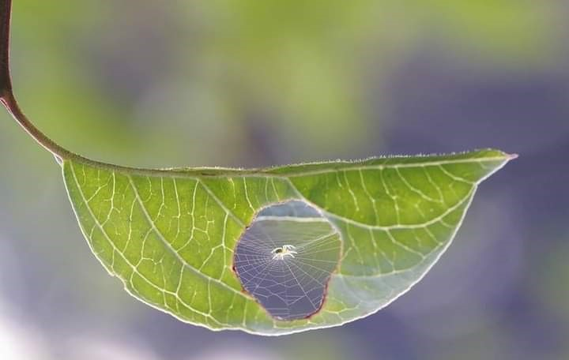
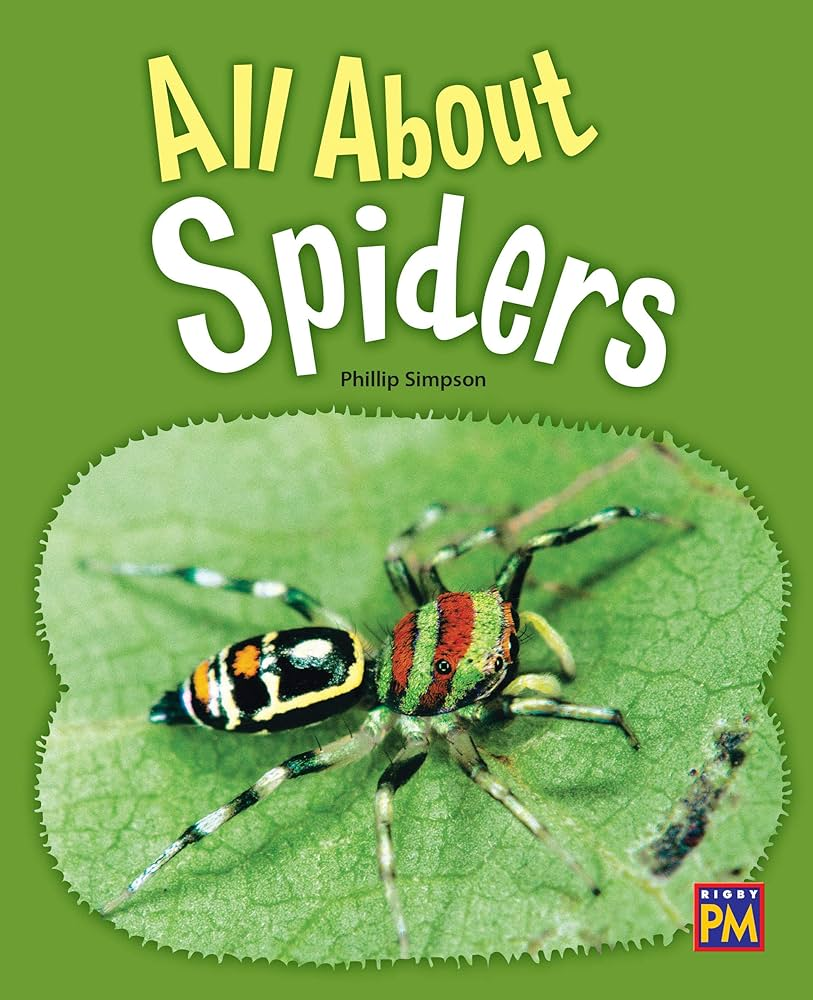

eco Get Involved
There are many ways you can contribute to the protection and study of spiders. Whether you’re an enthusiast, a researcher, or someone who’s simply curious, your efforts can make a significant impact.
Protect Spider Habitats
Learn how to create and maintain safe environments for spiders in your backyard. Small changes can make a big difference in supporting local spider populations.
Plant Native Vegetation to Provide Natural Habitats

Avoid Using Pesticides and Chemicals That Harm Spiders
Promote Awareness About the Importance of Spiders in the Ecosystem
Share articles, videos, and infographics on social media to spread awareness about spider conservation.
Local Projects and Citizen Science

Get involved in local projects and citizen science initiatives that focus on spiders. These activities help collect important data and raise awareness.
Join local wildlife conservation groups and participate in spider surveys.
Contribute to online databases by reporting spider sightings in your area.

Attend workshops and seminars to learn more about spider conservation.
Educational Materials
Expand your knowledge about spiders through various educational resources. Understanding these fascinating creatures is the first step to their preservation.
Articles: Dive deep into scientific articles and research papers about spiders.
Books: Explore a range of books, from field guides to detailed studies on spider behavior.
Videos: Watch documentaries and educational videos about spider species and their habitats.